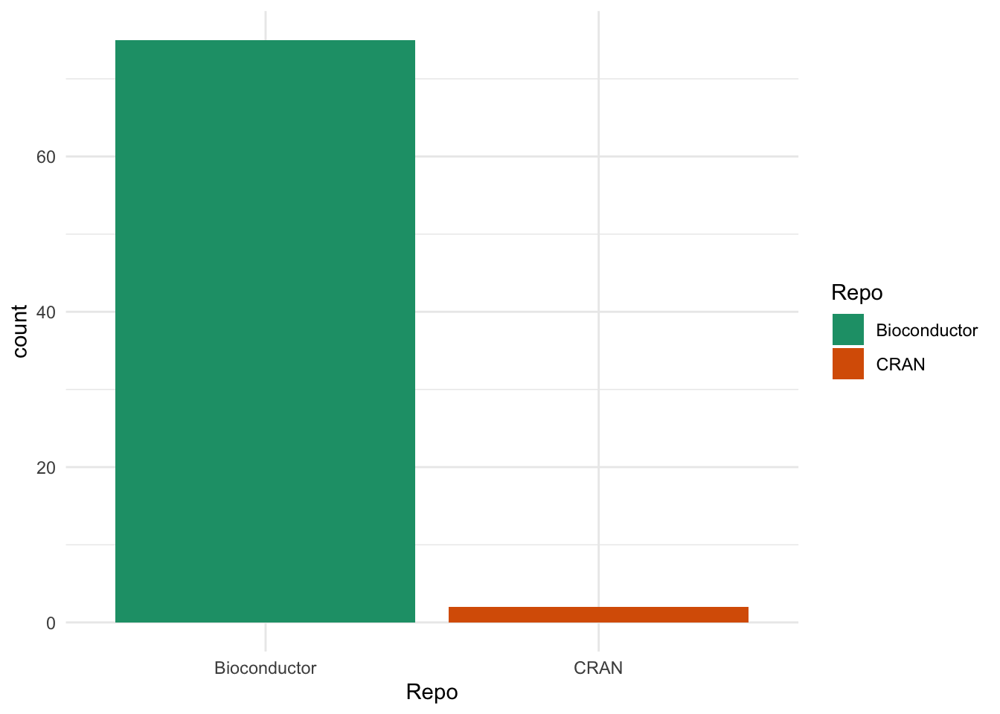
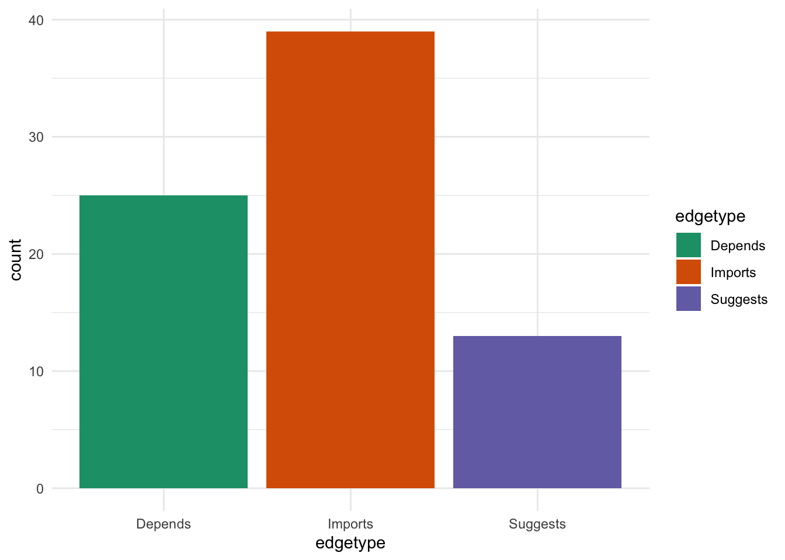
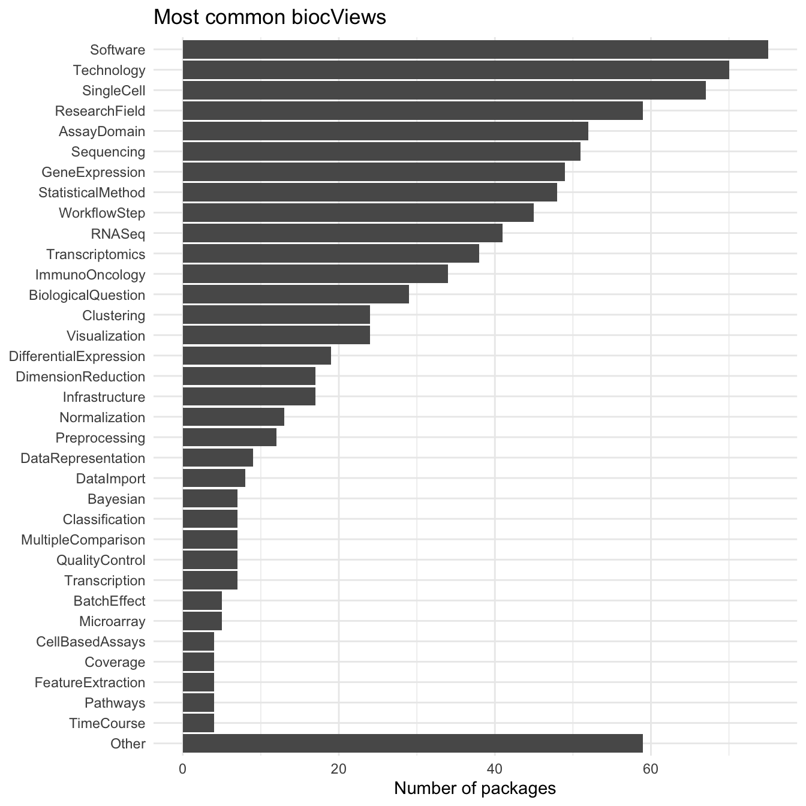
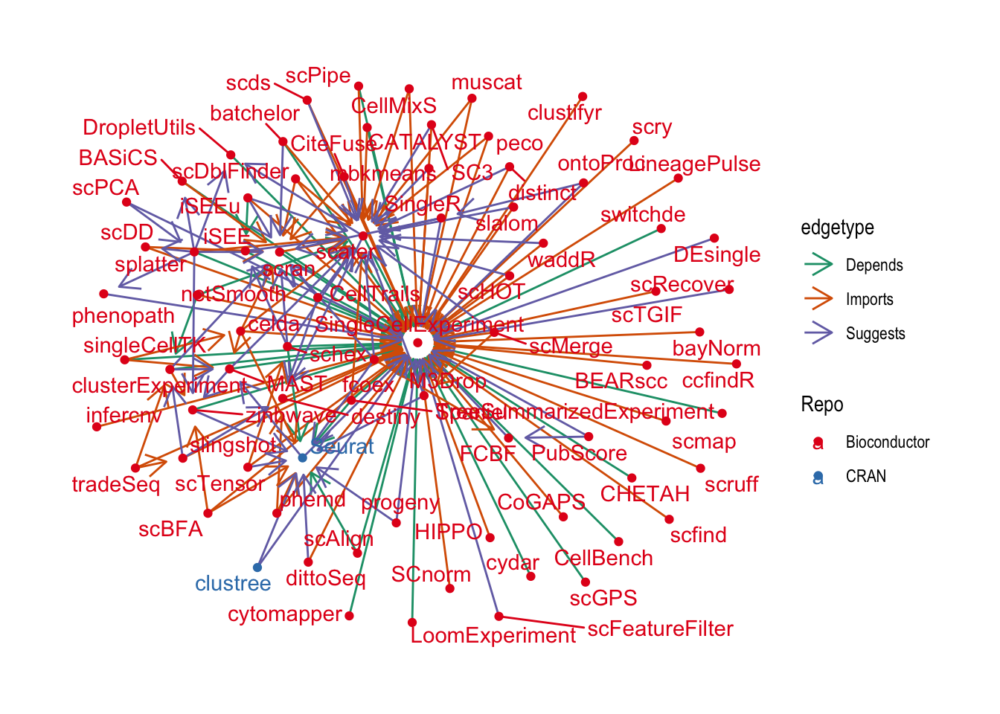
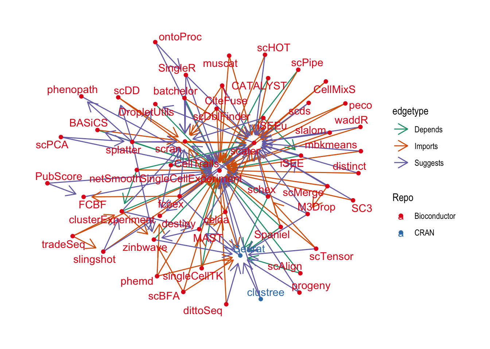
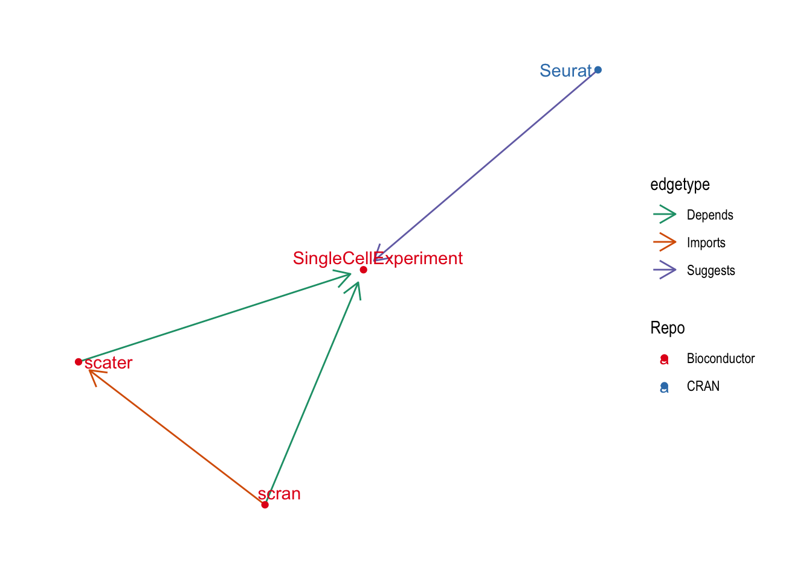
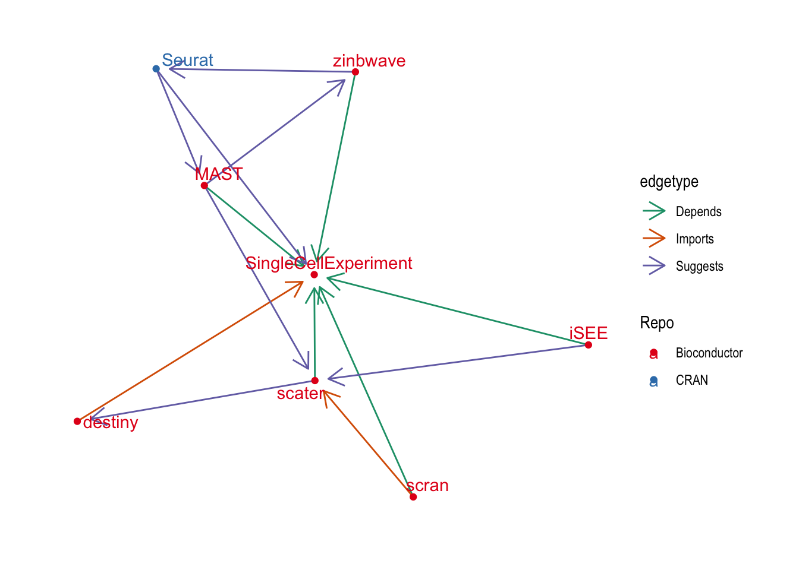

Back to the SCE-verse!
A few weeks ago I did a short wrap up of the latest Bioconductor 3.11 release. The last time I did that (for the 3.7 release in 2018) I followed it up with a post looking at packages which depend on the {SingleCellExperiment} package. A lot has changed in the scRNA-seq world over the last two years and we have grown from around 200 analysis tools to almost 650. Given that growth I thought it would be good to repeat that analysis and see what the SCE-verse looks like in 2020.
library("BiocPkgTools")
library("tidygraph")
library("ggraph")
library("tidyverse")Getting package network
{BiocPkgTools} is now a fully-fledged Bioconductor package and has some new functionst that make it easy to get information about the packages connected to {SingleCellExperiment}.
# Get Bioconductor package information
bioc_pkgs <- biocPkgList()
# Get Bioconductor dependencies
all_bioc_deps <- buildPkgDependencyDataFrame()
# Select reverse dependencies for SingleCellExperiment
bioc_revdeps <- filter(all_bioc_deps, dependency == "SingleCellExperiment")
# Select dependencies of the reverse dependencies
bioc_edges <- bioc_revdeps %>%
bind_rows(
filter(all_bioc_deps, Package %in% bioc_revdeps$Package)
)The information from {BiocPkgTools} includes CRAN packages that are
dependencies of Bioconductor packages but doesn’t include any CRAN packages that
depend on {SingleCellExperiment}. To get those we will use a tidier version
of the function in the previous blog post. This function just uses {purr}
to loop over the different types of dependencies and calls the
tools::package_dependencies() function.
get_cran_deps <- function(pkgs, db, reverse = FALSE,
types = c("Depends", "Imports", "Suggests")) {
deps <- purrr::map_dfr(types, function(.type) {
deps_list <- tools::package_dependencies(
pkgs, db,
which = .type,
reverse = reverse
)
tibble(Package = pkgs, dependency = deps_list, edgetype = .type)
}) %>%
unnest(dependency)
if (reverse) {
deps <- dplyr::select(
deps,
Package = dependency,
dependency = Package,
edgetype
)
}
return(deps)
}
db <- available.packages(repos = "http://cran.r-project.org")
cran_revdeps <- get_cran_deps("SingleCellExperiment", db, reverse = TRUE)
cran_edges <- cran_revdeps %>%
bind_rows(
get_cran_deps(cran_revdeps$Package, db)
)Now we can combine the networks from Bioconductor and CRAN and create a graph structure.
revdeps <- bioc_revdeps %>%
bind_rows(cran_revdeps) %>%
distinct() %>%
mutate(
Repo = if_else(Package %in% bioc_pkgs$Package, "Bioconductor", "CRAN")
)
nodes <- revdeps %>%
select(Package, Repo) %>%
add_row(Package = "SingleCellExperiment", Repo = "Bioconductor")
edges <- bioc_edges %>%
bind_rows(cran_edges) %>%
filter(dependency %in% c("SingleCellExperiment", revdeps$Package)) %>%
distinct()
graph <- tbl_graph(nodes = nodes, edges = edges)We now have a graph that contains {SingleCellExperiment} and the 77 packages that depend on it. We also have edges between the reverse dependencies but have removed edges to other packages.
What uses {SingleCellExperiment}?
Where are the packages from?
Before we look at the relationships between packages let’s look at the reverse dependencies themselves. We expect that most of the dependencies will be other Bioconductor packages but are there any in CRAN?
ggplot(revdeps, aes(x = Repo, fill = Repo)) +
geom_bar() +
scale_fill_brewer(palette = "Dark2") +
theme_minimal()
There are only 2 packages from CRAN, which are the same two we saw last time. These are {Seurat}, which contains the other major R object for scRNA-seq data and includes functions for converting from {SingleCellExperiment} objects, and {clustree}, my package for visualising clustering across resolutions which includes a {SingleCellExperiment} interface.
What dependency do they have?
What about the types of dependencies?
edges %>%
filter(dependency == "SingleCellExperiment") %>%
ggplot(aes(x = edgetype, fill = edgetype)) +
geom_bar() +
scale_fill_brewer(palette = "Dark2") +
theme_minimal()
Most of the packages either “import” or “depend” on {SingleCellExperiment}. This is unsurprising given that is a core data structure. I suspect most of the “suggests” packages work with several data structures but we would have to check this and see.
What do they do?
All packages in Bioconductor are annotated with “biocViews”. There are a set of labels designed to show what a package can be used for. They provide a convenient way to get a overview of what the packages in the SCE-verse do.
bioc_views <- bioc_pkgs %>%
filter(Package %in% revdeps$Package) %>%
select(biocViews) %>%
unnest(biocViews) %>%
mutate(biocViews = fct_lump_n(fct_infreq(biocViews), 30))
ggplot(bioc_views, aes(x = fct_rev(biocViews))) +
geom_bar() +
coord_flip() +
ggtitle("Most common biocViews") +
ylab("Number of packages") +
theme_minimal() +
theme(axis.title.y = element_blank())
Many of the most common biocViews are fairly general terms but there is a set that stands out as being specific to scRNA-seq data including “SingleCell”, “GeneExpression”, “RNASeq” and “Transcriptomics”. Further down the list we see terms related to specific analysis tasks (“Clustering”, “Visualization”, “DifferentialExpression”, “DimensionReduction”, “Normalization” etc.). Many of these are similar to the categories we came up with to group tools on scRNA-tools. It would be interesting to look at the differences in ranking but I suspect there are enough differences in how the terms are used that it would be difficult to compare them.
Relationships between packages
Now that we have a bit of an overview of what packages there are let’s see how they relate to each other. First let’s plot all the packages in our graph. Remember that everything here depends on {SingleCellExperiment} and we have links between them but not dependencies to other packages.
ggraph(graph, layout = "fr") +
geom_edge_fan(aes(colour = edgetype),
arrow = arrow(length = unit(4, 'mm')),
end_cap = circle(3, 'mm')) +
geom_node_point(aes(colour = Repo)) +
geom_node_text(aes(label = Package, colour = Repo), repel = TRUE) +
scale_color_brewer(palette = "Set1") +
scale_edge_color_brewer(palette = "Dark2") +
theme_graph()
A lot of these packages have no other dependencies in this community except for {SingleCellExperiment}. While I’m sure that they are very useful they aren’t very interesting for this analysis so let’s remove them by excluding nodes with a single edge.
graph_deg2 <- graph %>%
activate(nodes) %>%
mutate(Degree = igraph::degree(graph)) %>%
filter(Degree >= 2)
ggraph(graph_deg2, layout = "fr") +
geom_edge_fan(aes(colour = edgetype),
arrow = arrow(length = unit(4, 'mm')),
end_cap = circle(3, 'mm')) +
geom_node_point(aes(colour = Repo)) +
geom_node_text(aes(label = Package, colour = Repo), repel = TRUE) +
scale_color_brewer(palette = "Set1") +
scale_edge_color_brewer(palette = "Dark2") +
theme_graph()
That’s better but it’s still pretty crowded. Let’s see if we can pick out the most important nodes using a centrality measure.
graph_central <- graph_deg2 %>%
activate(nodes) %>%
mutate(Centrality = centrality_authority()) %>%
filter(Centrality > 0.1)
ggraph(graph_central, layout = "fr") +
geom_edge_fan(aes(colour = edgetype),
arrow = arrow(length = unit(4, 'mm')),
end_cap = circle(3, 'mm')) +
geom_node_point(aes(colour = Repo)) +
geom_node_text(aes(label = Package, colour = Repo), repel = TRUE) +
scale_color_brewer(palette = "Set1") +
scale_edge_color_brewer(palette = "Dark2") +
theme_graph()
No surprises there! This has picked out what are probably the most used and influential R packages for scRNA-seq analysis. The central Bioconductor packages of {SingleCellExperiement} (object), {scater} (quality control and visualisation) and {scran} (normalisation and downstream analysis). They are joined by {Seurat} which is perhaps the most complete R scRNA-seq analysis package but is hosted on CRAN and uses it’s own object. It’s centrality to this graph suggests that many Bioconductor packages provide some kind of support for {Seurat} objects.
Let’s zoom out a little bit by relaxing the centrality threshold and see what else we find.
graph_central <- graph_deg2 %>%
activate(nodes) %>%
mutate(Centrality = centrality_authority()) %>%
filter(Centrality > 0.05)
ggraph(graph_central, layout = "fr") +
geom_edge_fan(aes(colour = edgetype),
arrow = arrow(length = unit(4, "mm")),
end_cap = circle(3, "mm")) +
geom_node_point(aes(colour = Repo)) +
geom_node_text(aes(label = Package, colour = Repo), repel = TRUE) +
scale_color_brewer(palette = "Set1") +
scale_edge_color_brewer(palette = "Dark2") +
theme_graph()
This has added a few more central packages: {iSEE} which is a Shiny app for interacting with {SingleCellExperiment} objects, {MAST} for differential expression testing, {zinbwave} for dimensionality reduction and integration and {destiny} for creating diffusion maps.
Conclusion
It is great to see the expansion of the SCE-verse! The object has been well taken up by the community and I think there is now a better understanding of the value of using standard objects, both in increased interoperabilty between packages but all time and effort saved during development. I had hoped to see more connections between packages though. Apart from a few central packages there aren’t that many dependencies with the SCE-verse which suggests there could be a lot of duplicated functionality within packages. Now that we have a common object to work with perhaps the next step forward in the development of the ecosystem is to centralise and reuse common functions so that developers can focus on innovative new methods? I have been fairly selective in this analysis though so it is possible I have missed some of this which is happening already.
It would (still) be good with repeat this for other major object, perhaps I will get to that in a future post.